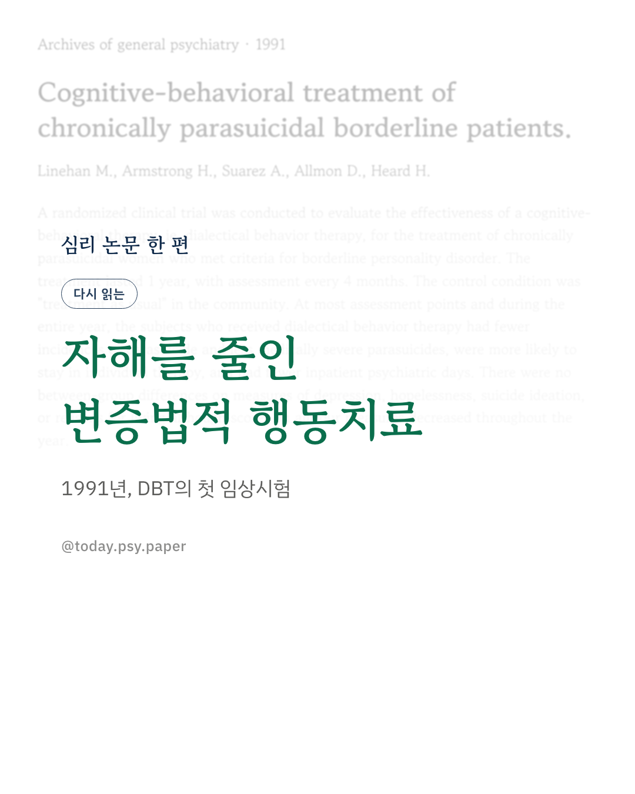
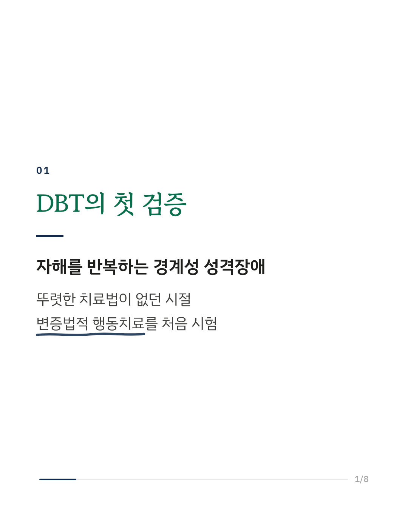
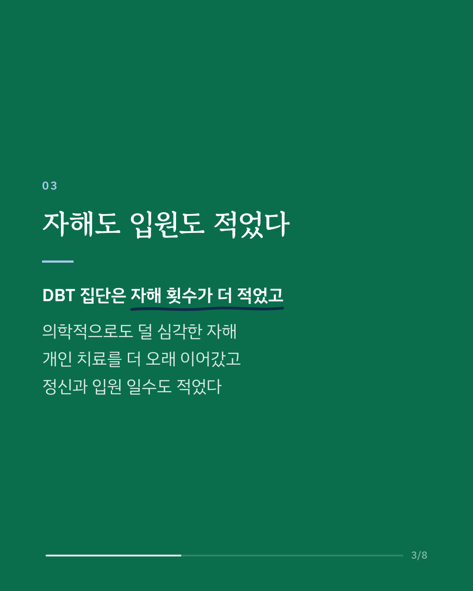
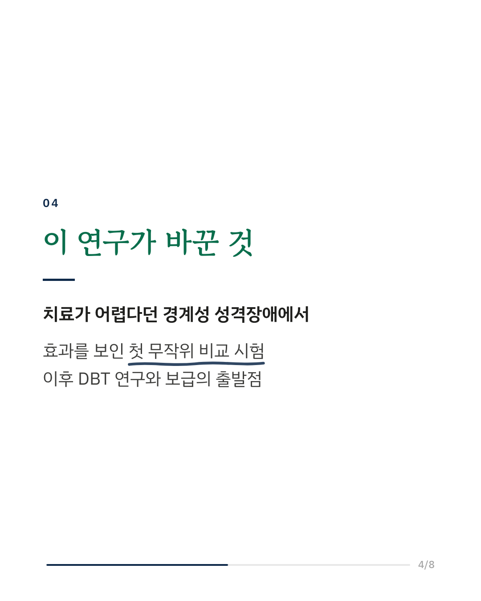
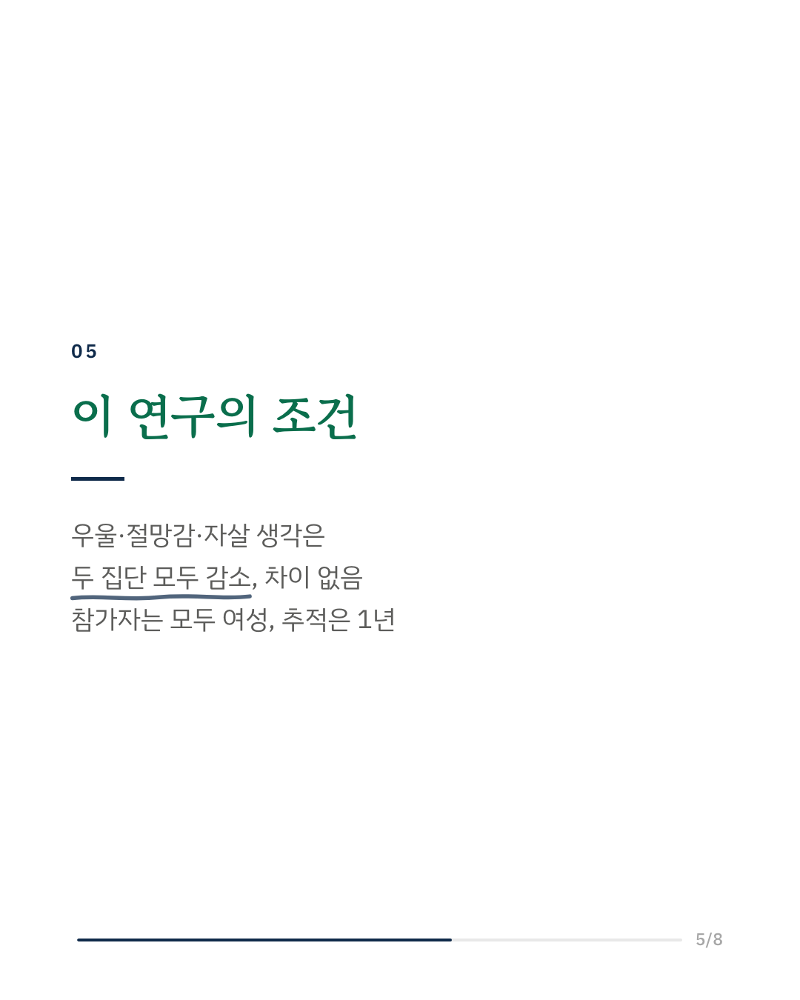
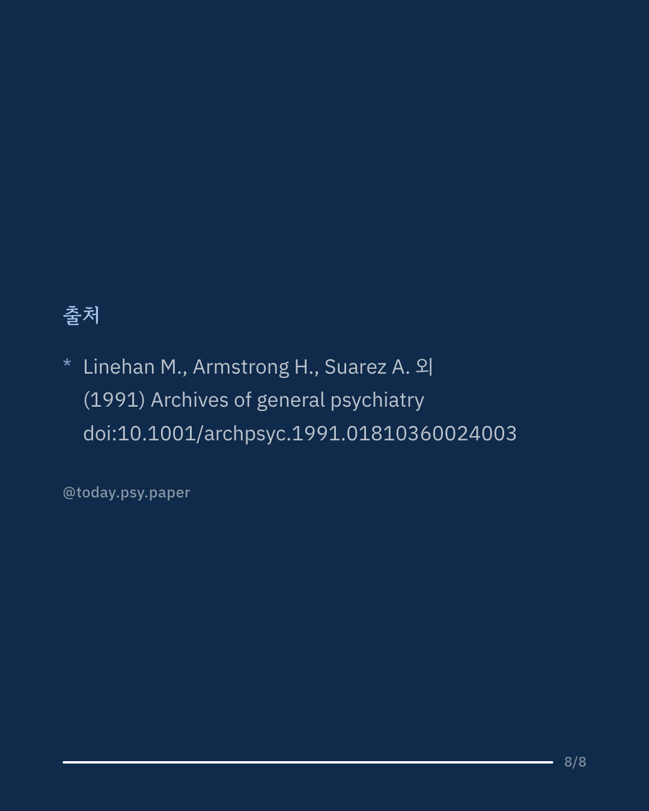

경계성 성격장애에서 반복되는 자해는 오랫동안 치료가 어렵다고 여겨졌습니다. 1991년 마샤 리네한 연구팀은 이를 위해 만든 변증법적 행동치료(DBT)의 효과를 처음으로 무작위 임상시험으로 검증했습니다. 자해를 반복하는 경계성 성격장애 여성을 DBT 집단과 지역사회의 통상 치료 집단으로 나누어 1년간 치료하고, 4개월마다 변화를 평가했습니다. 1년 동안 DBT를 받은 집단은 자해 횟수가 더 적었고, 자해의 의학적 심각도도 덜했습니다. 개인 치료를 중단하지 않고 이어간 비율이 높았고, 정신과 입원 일수도 적었습니다. 반면 우울, 절망감, 자살 생각, 살아야 할 이유 척도에서는 두 집단 사이에 차이가 없었습니다. 네 척도 모두 1년에 걸쳐 두 집단에서 함께 좋아졌습니다. 이 연구는 경계성 성격장애에 효과가 확인된 구조화된 심리치료가 있음을 처음 보여준 논문으로, 이후 DBT가 널리 연구되고 보급되는 출발점이 됐습니다. 기분 척도에는 차이가 없어도 행동은 달라질 수 있다는 결과도 이 분야의 중요한 관찰로 이어졌습니다. 참가자가 모두 여성이었고 추적 기간이 1년이어서, 그 이후의 변화는 이 연구로는 알 수 없습니다. Archives of General Psychiatry (1991), 'Cognitive-behavioral treatment of chronically parasuicidal borderline patients' 힘든 마음이 들 때는 자살예방상담전화 109, 정신건강상담전화 1577-0199에서 도움을 받을 수 있습니다. DOI: 10.1001/archpsyc.1991.01810360024003 #임상심리 #정신건강정보 #심리학연구 #논문리뷰 #경계성성격장애 #변증법적행동치료 #심리치료
python3 publish.py 1845222